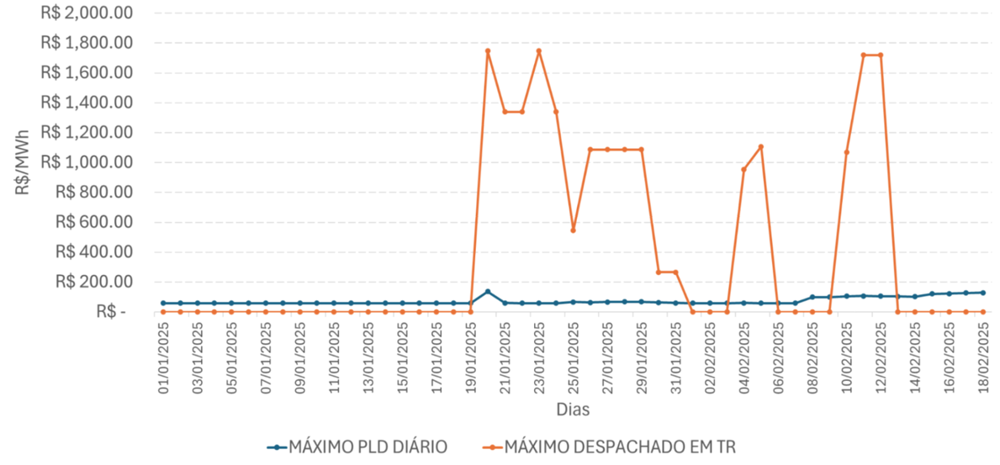
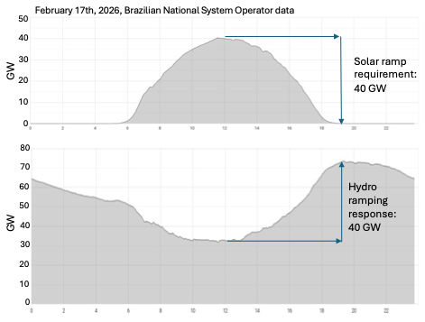
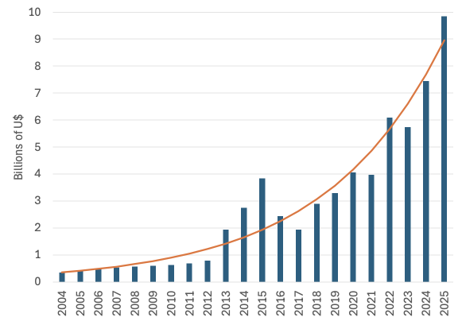

电力市场之所以独特，是因为它建立在物理系统之上，支配这些系统的是物理定律，而不是合约或政治意志。供需必须每秒保持平衡；潮流遵循电网约束，而不是合约路径；稀缺性既取决于装机容量，也同样取决于时间、位置和灵活性。因此，市场设计必须正视这些物理现实，把真正稀缺的东西内部化，才能向市场主体传递正确的信号。与此同时，电力市场的设计也是为了应对特定的挑战和各地的区域现实。
每个国家或州都有自己的气候和资源禀赋，也有自己的历史、制度和政治目标，因此世界上没有两个完全相同的电力市场。正因如此，并不存在唯一的最佳市场设计。有的只是更好的设计，以及积累下来的经验教训。技术、经济、政治优先事项乃至气候本身都在随时间演变，所以调整并不是市场设计的失败，而是市场设计的内在组成部分。尽管如此，恰恰因为市场设计是通过塑造激励来发挥作用的，即便只是增加一项小小的规则或一次监管干预，也必须慎之又慎，因为看似微小的改动可能从根本上改变激励、扭曲价格信号，产生与初衷大相径庭的结果。在处理补贴问题时，这一点尤为关键。
短期价格是电力市场的基石，它把其他所有工具与系统的稀缺性联系在一起。当价格内化了系统的运行现实，既揭示用户的支付意愿，也揭示维持系统平衡所需的电网资源和发电技术的稀缺程度时，整个经济—技术循环就会被激活，去纠正短期的短缺或过剩。在价格能够反映运行现实中“痛点”的市场里，投资者和企业家会作出回应，把资本、技术和智慧投向经济价值最高的地方。
即便在主要依靠长期远期合约的市场中也是如此，因为合约电量与实际用电量（或发电量）之间的偏差，要按短期现货价格结算。因此，短期现货价格保证了长期合约市场及其激励与系统未来的短期运行需求之间的联系。如果读者觉得这一点并不显而易见，只需去问问最近遭遇弃电的可再生能源发电商，或者用我更愿意的说法，那些没有被调度的发电商。它们的合约收入虽然没有变化，但由于实际发电量与合约头寸之间的差额要按短期价格结算，它们损失了巨额资金。遗憾的是，巴西有许多这样的例子。不少发电企业把合约签到监管允许的上限（接近其平均发电量），在确定长期远期合约头寸时，忽视了同时考虑自身发电的可实现性和捕获价格的重要性。
一旦市场与运行之间的纽带断裂，系统照样运行，但市场将不再为稀缺或必要的东西付费。这在巴西等拉丁美洲国家尤为突出，但在某种程度上，这是任何电力市场都面临的大问题；这就是“万恶之源”。用不了多久，系统运营商就会发现，自己不需要的东西过剩，必需的东西却短缺。此后剧情如何展开、局面如何恶化，我们已经很清楚：要求更多补贴，按技术类型设立特殊规则和专项拍卖，司法纠纷不断，行业机构被削弱，具有强大政治影响力的利益集团实施监管俘获。这一切在某种程度上都被赋予了正当理由：有人声称市场无法有效地吸引或抑制投资，也有人借助与系统恶化的真正原因毫不相干的阶段性副作用，编织机会主义的叙事，并以此主导了讨论。
让我们从理论回到巴西电力行业的现实。过去十年间，环境约束和更严格的许可审批要求大大限制了大型水电项目的扩张，新水库的建设随之停止，巴西也越来越依赖风电、光伏等间歇性可再生能源。与其他电源不同，光伏和风电虽然提供电能，但由于其出力的间歇性，会消耗系统的短期灵活性，而巴西现行的电力市场设计对此仍然准备不足。
除了辅助服务没有价格之外，现行的行业模式还提前一天确定批发市场的短期电价。结果，从前一天到当天，预测与实际情况之间的所有误差，以及为纠正这些误差而采取的运行措施的大部分成本，都在市场之外结算。从图1可以清楚地看到，提前一天确定的现货价格与实时的实际情况明显背离。

在这种设计下，引入不确定性的市场主体无须为其造成的成本付费，帮助应对不确定性的市场主体也得不到应有的报酬。以图2为例，2026年2月17日中午前后，光伏出力达到40吉瓦的峰值。当时，水电出力大幅下降，傍晚又迅速爬坡，以弥补日落时光伏出力的急剧下滑。这项服务通常被称为灵活性，对维持系统的实时平衡至关重要，但它在日前现货价格中并没有得到充分体现，因为为应对由此产生的净负荷波动而在实时采取的许多运行措施，都没有纳入价格形成过程。

在这些扭曲之上，又叠加了一条危险的捷径，即通过补贴确保可再生能源得以部署，并在与常规电源的竞争中蓬勃发展。如今，可再生能源享受三类补贴：（1）输配电网使用费减免50%；（2）免于参与辅助服务分摊；（3）免于承担其不确定性带来的额外成本。与这套补贴叠加在一起的，是早已剥离了一切稀缺信号的短期价格，而这些稀缺信号本应来自这些电源所造成的不灵活性。其结果是，相对于与之竞争的发电技术，可再生能源出现了一个被系统性抬高的“感知价格”，推动风电和光伏在补贴下加速扩张，却缺少一个设计良好的市场本应施加的经济约束。图3展示了巴西通过电价转嫁给用户的补贴呈指数式增长。能源发展账户（CDE）的增长主要由可再生能源补贴推动，年均增速达16.5%。

从2022年起，随着分摊给居民用户的补贴成本升至历史高位，分布式发电（DG）在对现行法律框架的一种解释下获得了强劲推动。按照这种解释，配电网内小型光伏电站所发的电量，可以通过净计量电价机制共享和出售。在这一背景下，DG通过在受管制市场内出售分布式发电电量抵扣额度，挑战了现状和现行市场设计，而在受管制市场中，只有配电公司才获准售电（配电公司是受监管的垄断零售商，并在批发市场中参与竞争）。这清楚地说明，一项新技术挑战了既有的市场设计和监管，而后者未能适当调整，也未能将新的范式内部化。结果，现行市场设计丧失了自我调节能力，因为无论批发价格还是零售价格，都没有重新调整，以反映新技术，以及如今左右系统短期运行的发电和用电资源的波动性及其空间分布。
正是在这种短期价格不再代表系统运行现实的环境中，竞争不再服务于系统和用户的利益，而变成了对下一笔补贴的争夺。也正是在这种环境中，经济和监管陷入混乱，游说能力取代市场智慧，成为赢得这场游戏最有效的策略。这就是2025年底巴西电力市场的状况。
巴西2001年爆发严重的限电配给危机之后，振兴委员会研究了导致系统崩溃的主要原因，并在扎实的技术分析基础上，为新的监管框架奠定了基础。这一新监管体系的核心是三项主要原则，旨在确保清晰的长期价格信号，推动新增容量的投资，使之跟上发展中经济体快速增长的需求：
- 第一项原则规定，100%的负荷都必须有合约覆盖。对签约不足的事后处罚，加上对配电公司成本传导的限制，确保了及时签约的激励。
- 第二项原则要求每份合约都以一项电量可靠性指标作为背书，这一指标称为“保证电量”；它是一种以行政方式计算的认证，相当于水电机组所用固定电量证书的概率化版本。
- 最后，第三项原则规定，配电公司只能通过公开拍卖购买标准化的长期合约；与智利等其他拉丁美洲国家不同，这些拍卖由矿产与能源部集中组织，采用单一购买方采购拍卖的形式。
前两项原则确保有足够的实际容量满足全部用电需求，第三项原则则为配电公司提供了一套透明、竞争性的系统化签约机制，而配电公司有权将购电成本传导给用户。新的监管设计于2004年实施后，重新把负荷增长与长期投资信号联系起来，这一信号由远期合约市场的均衡决定。其结果是新一轮强劲而协调的扩张，许多拉丁美洲国家纷纷效仿，世界各地也将其视为一个值得关注的案例。
自2004年以来，拉丁美洲电力系统运行的许多重要方面都已改变，过去支撑所选近似方法和市场设计的大多数前提已不再成立。因此，拉美各国现行的监管框架面临诸多挑战。然而，按照支撑21世纪初那轮改革的同一逻辑，应对当前的挑战，需要仔细审视其成因，而不是只盯着其影响和后果。
在这方面，拉美国家长期以来低估了短期现货价格的作用，原因在于水电资源相对丰富，而水电凭借强大的爬坡能力和惯量，能够“解决”大部分短期运行中的稀缺问题，正是这些特性赋予了水电机组很高的灵活性。如今，随着间歇性可再生能源大规模并网，那些十多年来一直在应对这些问题的国家所积累的经验，就显得极为宝贵。
因此，要从结构上解决巴西当前在灵活性不足方面面临的挑战，与拟议中的容量拍卖相比，更根本的出路在于：（1）逐步而迅速地削减补贴；（2）使现货价格与系统实时运行相一致；（3）建立辅助服务市场；（4）发展新的风险管理工具和交易渠道。众所周知，容量拍卖这种机制会削弱稀缺定价，扭曲投资激励。
然而，这一改革议程并不止于批发市场改革。它还要求配电系统运营商与国家系统运营商更深入地整合，并在配电环节打下必要的物理和监管基础，使用户、聚合商和分布式发电主体能够积极参与市场、响应价格信号。
这些问题并没有穷尽所有必要的改进，但它们指向一条更具结构性、能够自我调节的道路，与目前所走的道路相比，它对补贴和市场保留（受保护的专属市场）的依赖更少。仅仅为了让某些特定的可控电源留在场上而为容量付费，这种想法不仅是用一项补贴去应对另一项补贴（对可再生能源的补贴）造成的扭曲，也证明现行的市场设计和监管框架（即游戏规则）未能培育出系统真正需要的东西。
因此，拟议中的容量储备拍卖具有以下特点：（i）按电源类型设置专门产品，从而削弱竞争；（ii）采用静态、单一属性的评估框架；（iii）不以短期价格进行结算（与巴西已经实施、行之有效的看涨期权机制不同，这些容量合约与系统的实际物理状况完全脱节）；（iv）需求由行政方式确定，与最终承担成本者的支付意愿脱节。这样的拍卖并没有解决结构性问题，只是又增加了一层补贴，而这层补贴最终还需要纠正。